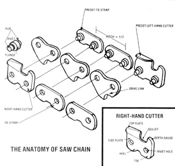
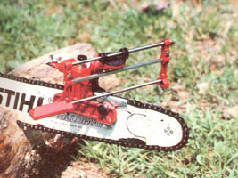
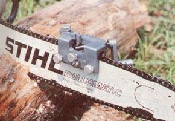

You can keep your own chain saw cutting fast and true with either of these . . .
The introduction to the chapter on how to sharpen chain saws in Barnacle Parp's Chain Saw Guide (see the editor's note on the following page for access information) includes an anecdote about the author's buddy-a character called Three-Legged Muskrat-who insists on filing his saw chains by hand. Parp concludes: "Muskrat is a real old-fashioned expert who has worked with sharp steel all his life. When he is finished sharpening a chain by hand, it's almost as perfect as a chain that was machine sharpened . . . ."
Now if you've ever tried to lay a file to a dull chain with nothing more than your eyesight and fingertips to guide you, you know that Muskrat must have been a near magician with a file. And you're also well aware-if you've ever tried hand-sharpening and failed-just how miserable working with an improperly sharpened chain saw can be. Such a device will move through a log slowly, may buck mightily, and invariably makes a curved cut that jams the guide bar in the middle of the timber you're trying to sever.
No doubt about it, there's no substitute for a chain that's been honed to the correct angle and has had its cutters properly profiled and trimmed to equal length. Unfortunately, most amateur lumberjacks are at a loss to determine how to get a correctly sharpened chain . . . without making regular time-consuming visits (at $2.50 to $4.00 apiece) to the local saw shop to have the job done.
We began looking for the answer to that question several months ago, and gathered a representative selection of the locally available do-it-yourself chain saw sharpeners. Through the past summer and into the fall, we put the dozen or so contraptions to work keeping the saws used at the Eco-Village and by MOTHER's staff members in tiptop shape. During that time we dulled a passel of chains (they were subjected to about every job short of ditch digging or wire cutting), and we've come to some definite conclusions about what does, and doesn't, make an effective chain saw sharpener.
RUB YOUR BELLY AND PAT YOUR FOREHEAD AT THE SAME TIME
The complexity of the task that a chain sharpening device must accomplish is formidable, and the job is made even more difficult by the fact that the device has to be able to perform many of the different functions at the same time. First, and most obvious, the tool must precisely establish the proper angle for the cutters in relation to the direction of chain travel. Most saw chain (known as chipper-type) is sharpened to a 35° angle, but some chisel types are designed to use a 30° cut. However, many experienced saw owners prefer to use a chain trimmed to less than the recommended angle, in order to reduce the strain on the operator during extended periods of sawing . . . or to perform special tasks, such as ripping.
Whatever the means used to control the angle of the teeth, a good chain sharpener also needs some mechanism to prevent the file, stone, or bur from digging too deeply into the cutter's gullet or (worse yet) into the tie strap. This happens all too often to chains that are hand. sharpened by amateurs. The telltale sign is teeth that are formed like breaking waves at the beach. A chain that has been "hooked" in this fashion not only is structurally weakened, but also will dull quickly and pull and jerk when being used.
Furthermore, there's another angle that must be taken into account when sharpening a saw. Some types of chain have their cutters ground at other than horizontal. For such chains the filing device will typically be set to point uphill at a 5 or 10° angle.
In addition, after months of evaluation, we're convinced that an effective chain sharpener must include a provision for controlling the amount by which the cutters are shortened (unequal teeth are a major cause of curved sawing) . . . a mechanism to grip the chain during sharpening to prevent it from deflecting . . . and the ability to deburr and smoothly finish the edge. And with all that testing under our belts, we've come to prefer two sharpeners to all the others evaluated, simply because they both come closest to meeting the criteria listed above. However, depending on the type(s) of saw(s) that you own, one of them may to be the better choice for you
GAMN': $24.95
The Gamn' sharpener is a newcomer to the market, and works quite differently from conventional file-type sharpeners. It hones with a carbide bur that the operator turns with a crank (instead of employing the reciprocating motion common to file sharpeners) . . . consequently, the manner in which the Gamn' removes metal from the chain is also different from that of a file sharpener.
There are a couple of advantages to the Gamn' approach. First, because the blades on the bur are moving parallel to the direction of chain travel, any irregularities produced in the tooth's steel surface (which might be caused by chips of metal, for example) will be aligned with the cutting action. Thus the gouges will be much less prone to plugging with wood resins than would be the case with a device that trims metal perpendicular to the direction of chain travel. In addition, the clockwise rotation of the car bide bit won't leave a raised burr on the finished edge of the tooth.
Moreover, the Gamn' sharpener is solidly constructed (it's made from aluminum), clamps rigidly to the saw's bar, is equipped with a cinch nut to hold the chain while sharpening, has an adjustable stop for setting the cutter length, and holds its rotating bur accurately to 35° (and horizontal). A newcomer to sharpening can get the hang of using it quickly, and a practiced operator should be able to sharpen a chain faster with the Gamn' than by any other manual method.
We have only two minor reservations about this otherwise excellent tool. For one thing, the device is quite uncompromising . . . it sharpens to only one angle (which means some saw owners won't be able to use it), and a different bur is required to sharpen chains of differing pitch. (This is also the case with file sharpeners, but the Gamn' tool's carbide bits are somewhat more expensive than files. However, the cost may be outweighed in the long run by the greater life expectancy of the grinder's extremely hard burs.) Second, the Gamn' does such a fine job of removing metal tha t an inexperienced or indiscriminate user could easily whittle away a great deal of tooth in short order. Unless the sharpener is properly adjusted (to remove the minimum material necessary), the result could be an oversharpened chain with a significantly shortened life span.
OREGON FILE GUIDE: $24.50
We tried out several different fileguide chain sharpeners, but none could approach the Oregon in either quality or performance. It's obvious that this manufacturer of saw chain thoroughly understood the qualities needed in the tool before developing the specifications for the device that bears the company's name.
The Oregon File Guide is equipped with numerous adjustments (enough to thoroughly intimidate a newcomer at first), and can accurately produce any conceivably useful combination of sharpening angles. The cutter angle, measured from the direction of chain travel, can be set anywhere between 0 and 45°, and the upward tilt is adjustable between 0 and 20° .
This Cadillac of file guides also features a pair of screw-in clamps (for proper centering) which hold the chain securely against the side load imposed by the file. The length of the cutters can also be set with an adjustable rubbing block (which prevents the file from moving beyond a fixed amount of travel), though this mechanism isn't as solid as is that on the Gamn'. What's more, the Oregon has one adjustment that wasn't included on any of the other file guides: The stop for the cutter can be moved, which allows the operator to position the file directly over the gullet. Thus the file will travel more nearly parallel to the bar as it swings through its arc.
We found the Oregon tool to be significantly easier to use than were any of the other file guides tested. Its tracking rod fits snugly in its bushings . . . so the shaft doesn't bind when a stray metal chip gets in the area. (The other units needed frequent lubrication to prevent such an occurrence.) A chain can be sharpened fairly quickly with the Oregon . . . once you learn the adjustments and establish a rhythm. Still, the procedure was considerably more timeconsuming with the Oregon than with the Gamn'.
Though the two sharpeners that we've described here are very different in design, both are capable of doing an excellent job. Still, it's a good idea to take your chain to the pros about once in every five sharpenings. Their very precise motorized equipment will quickly rectify any errors you might have been making with your mechanical device . . . and- while you're there-you can have your depth gauges adjusted as well. Furthermore, on about every third visit to the saw shop (or approximately once in 15 sharpenings), request that the proprietor inspect the drive links to insure that they're still properly profiled to fit snugly around your saw's primary sprocket.
If you follow a maintenance schedule similar to the one we've described, you'll find that your saw, and all of its various subsystems (such as the bar), will last for years . . . and that your work will go as quickly and pleasantly as possible. Just keep reminding yourself of the first time that you made a cut with your still brand-new saw. There's absolutely no reason why it shouldn't perform that well year after year!
EDITOR'S NOTE: The Oregon Fit( Guide can be purchased from any dealers who carry Oregon Products (they're numerous). The Gamn' Sharpener con be ordered directly (be sure to specify the bur size you need) from the manufacturer, Gamn' Enterprises, Inc., Dept. TMEN, RR 5, Box 39A Darmstadt Road, Evansville, Indiana 47711, or (with a charge cord) by calling the firm's tollfree number, 800/457-3392 (dial 812/8676469 in Indiana).
You might also find Barnacle Parp's Chain Saw Guide by Walter Hall to be helpful. Just about every subject having to do with the use and care of chain sows is covered in its 257 pages You can order the book by sending $7.0-Plus 95 cents shipping and handling-to Mother's Book-P.O. Box 70, Hendersonville North Carolina 28791.
|
 |
 |
 |
|
|
|
|